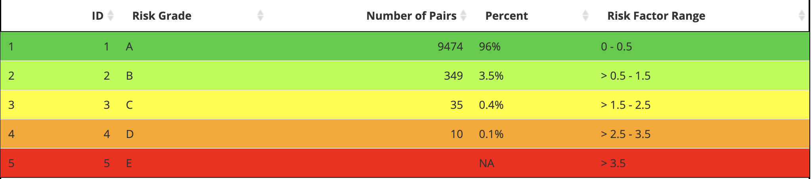

Risk Grades
risk-grade.RmdThe risk tables are created using three functions in the seg-shiny-1-3-3 repo. Through the multiple iterations of this application, different values have been used to establish these categories.
Objective
This vignette covers the risk grade table function
(seg_risk_grade_tbl()), including unit tests and
comparisons of the output from seg_risk_grade_tbl() to the
output in the application.
Load test data
The segtools package uses testthat, a common
testing framework for performing unit tests. I’ll load a test data file
used in the
GitHub repo (VanderbiltComplete.csv) below and run it
in the shiny app to generate the tables for comparison.
github_data_root <-
"https://raw.githubusercontent.com/mjfrigaard/seg-shiny-data/master/Data/"
full_sample_repo <- base::paste0(github_data_root,
"VanderbiltComplete.csv")
test_vand_comp_data <-
vroom::vroom(file = full_sample_repo, delim = ",")
glimpse(test_vand_comp_data)
#> Rows: 9,891
#> Columns: 2
#> $ BGM <dbl> 121, 212, 161, 191, 189, 104, 293, 130, 261, 147, 83, 132, 146, 24…
#> $ REF <dbl> 127, 223, 166, 205, 210, 100, 296, 142, 231, 148, 81, 131, 155, 25…Application (version 1.3.3) helper functions
The previous risk grade table functions come from the helpers.R
file in the application repo.
Risk Grade Table
The RiskGradeTable3 is also created in the server
function of the previous application.
SEG Risk Variables
Create the risk_vars_tbl from
seg_risk_vars():
risk_vars_tbl <- seg_risk_vars(df = test_vand_comp_data)
dplyr::glimpse(risk_vars_tbl)
#> Rows: 9,868
#> Columns: 19
#> $ BGM <dbl> 121, 212, 161, 191, 189, 104, 293, 130, 261, 147, 83, 1…
#> $ REF <dbl> 127, 223, 166, 205, 210, 100, 296, 142, 231, 148, 81, 1…
#> $ bgm_pair_cat <chr> "BGM < REF", "BGM < REF", "BGM < REF", "BGM < REF", "BG…
#> $ ref_pair_2cat <chr> NA, NA, NA, NA, NA, NA, NA, NA, NA, NA, NA, NA, NA, NA,…
#> $ included <chr> "Total included in SEG Analysis", "Total included in SE…
#> $ RiskPairID <dbl> 72849, 127636, 96928, 114997, 113800, 62605, 176390, 78…
#> $ RiskFactor <dbl> 0.0025445, 0.0279900, 0.0000000, 0.2061100, 0.2086500, …
#> $ abs_risk <dbl> 0.0025445, 0.0279900, 0.0000000, 0.2061100, 0.2086500, …
#> $ risk_cat <dbl> 0, 0, 0, 0, 0, 0, 0, 0, 0, 0, 0, 0, 0, 0, 0, 0, 0, 0, 0…
#> $ ABSLB <dbl> -0.001, -0.001, -0.001, -0.001, -0.001, -0.001, -0.001,…
#> $ ABSUB <dbl> 0.5, 0.5, 0.5, 0.5, 0.5, 0.5, 0.5, 0.5, 0.5, 0.5, 0.5, …
#> $ risk_cat_txt <chr> "None", "None", "None", "None", "None", "None", "None",…
#> $ rel_diff <dbl> -0.047244094, -0.049327354, -0.030120482, -0.068292683,…
#> $ abs_rel_diff <dbl> 0.047244094, 0.049327354, 0.030120482, 0.068292683, 0.1…
#> $ sq_rel_diff <dbl> 2.232004e-03, 2.433188e-03, 9.072434e-04, 4.663891e-03,…
#> $ iso_diff <dbl> 4.7244094, 4.9327354, 3.0120482, 6.8292683, 10.0000000,…
#> $ iso_range <chr> "<= 5% or 5 mg/dL", "<= 5% or 5 mg/dL", "<= 5% or 5 mg/…
#> $ risk_grade <chr> "A", "A", "A", "A", "A", "A", "A", "A", "A", "A", "A", …
#> $ risk_grade_txt <chr> "0 - 0.5", "0 - 0.5", "0 - 0.5", "0 - 0.5", "0 - 0.5", …
seg_risk_grade_tbl()
I’ve re-written the previous server code into the
seg_risk_grade_tbl() function:
risk_grade_tbl <- seg_risk_grade_tbl(risk_vars = risk_vars_tbl)
risk_grade_tbl| ID | Risk Grade | Number of Pairs | Percent | Risk Factor Range |
|---|---|---|---|---|
| 1 | A | 9474 | 96% | 0 - 0.5 |
| 2 | B | 349 | 3.5% | > 0.5 - 1.0 |
| 3 | C | 35 | 0.4% | > 1.0 - 2.0 |
| 4 | D | 10 | 0.1% | > 2.0 - 3.0 |
| 5 | E | NA | NA | > 3.0 |
The Risk Factor Range values comes from the table in the Surveillance Error Grid paper.

J Diabetes Sci Technol. 2014 Jul;8(4):658-72. doi: 10.1177/1932296814539589.
I’ll compare this to the application output (using the same test data) below:
Application RiskGradeTable

I’ll build the image output above manually and wrap the output
tibble in the data.frame as
app_risk_grade_tbl
app_risk_grade_tbl <- as.data.frame(
tibble::tibble(
ID = c(1L, 2L, 3L, 4L, 5L),
`Risk Grade` = c('A', 'B', 'C', 'D', 'E'),
`Number of Pairs` = c(9474L, 349L, 35L, 10L, NA_integer_),
Percent = c('96%', '3.5%', '0.4%', '0.1%', NA_character_),
`Risk Factor Range` = c('0 - 0.5', '> 0.5 - 1.5', '> 1.5 - 2.5',
'> 2.5 - 3.5', '> 3.5'),
)
)
app_risk_grade_tbl| ID | Risk Grade | Number of Pairs | Percent | Risk Factor Range |
|---|---|---|---|---|
| 1 | A | 9474 | 96% | 0 - 0.5 |
| 2 | B | 349 | 3.5% | > 0.5 - 1.5 |
| 3 | C | 35 | 0.4% | > 1.5 - 2.5 |
| 4 | D | 10 | 0.1% | > 2.5 - 3.5 |
| 5 | E | NA | NA | > 3.5 |
Test
Below I’ll test the seg_risk_vars() and
seg_risk_grade_tbl() functions:
-
The risk grade table doesn’t necessarily require that we test the entire table structure–we can focus on the specific columns we care about in the output (like
Number of Pairs)-
testthat::expect_equal()uses thewaldopackage to make comparisons, so I’ll use that first here to check theNumber of Pairscolumns
waldo::compare( x = risk_grade_tbl$`Number of Pairs`, y = app_risk_grade_tbl$`Number of Pairs` ) #> ✔ No differences -
-
Now we can formally test the columns using
testthat::expect_equal()and limit testing to only theNumber of Pairscolumntestthat::test_that("Test risk grade table", { testthat::expect_equal( # function table object = risk_grade_tbl$`Number of Pairs`, # application table expected = app_risk_grade_tbl$`Number of Pairs` ) }) #> Test passed 🥇